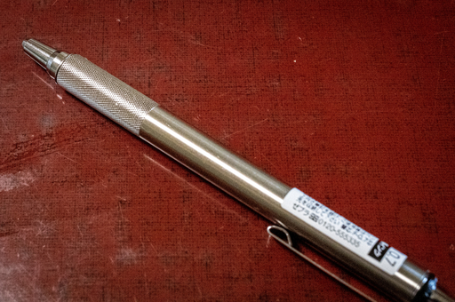
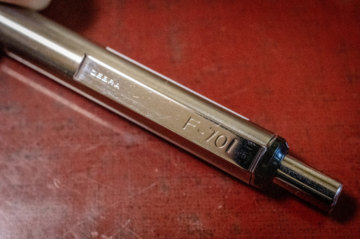
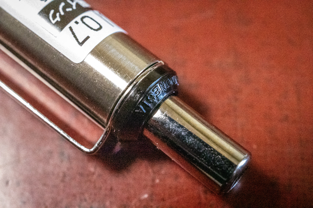
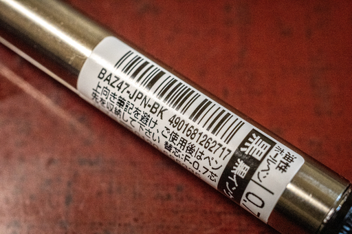
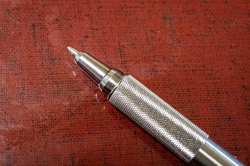
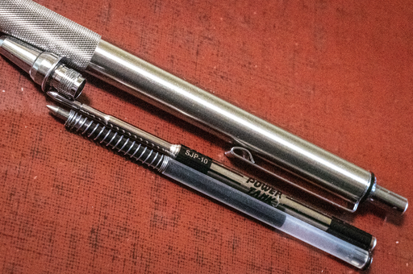
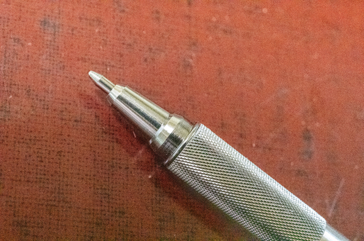
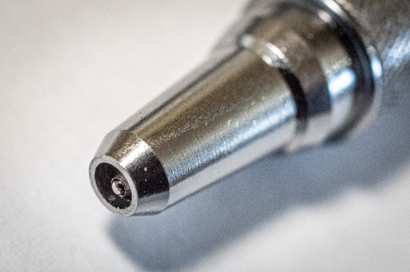

以前注文していた ZEBRA F-701 が届いた。無駄を廃した質実剛健な実用ボールペンという感じで非常に好みのタイプ。昔盗まれた三菱製の製図用シャープペンに通ずる虚飾の廃しっぷりだ。
手にすると小ぶりなペンであるにも関わらずずっしりとした重みを感じる。この重さがまたいい。軸が細すぎるという人もいるが自分が実際に持った感じだと製図用のペンなどとまったく変わらず自分には持ちやすくて好みだ。

クリップに Zebra F-701 とエンボス加工で刻印されている。

最近この F-701 はモデルチェンジしたらしく外側のパーツはすべてメタル化されているらしいが、この個体は旧版らしくノックの根本のパーツが樹脂製だ。もちろん樹脂製でも使用になんら問題はない。
ここのパーツがメタル化されたのはなんでも F-701 が正式な販路に乗っている北米で完全メタル化のニーズが強かったのが理由らしい。たしかに外装がすべてメタル化されたら質実剛健度が更に向上して格好良いとは思う。

X-701 のときも言ったがバーコードが 49 始まりで、日本からの発送を示してるのはなぜなんだぜ。X-701 も F-701 も実は日本からの発送で逆輸入品ではないのかもしれない。
本当に北米から逆輸入しているなら運送コストがドカッと売価に乗ってくるはずで、この価格では日本で販売できないはずだ。実際にはおそらく販路を絞って日本国内で流通させているのではないだろうか。

ペン先を出してみた。いたって普通だ。

ネットの噂を検証することに。三菱パワータンクの SJP-7 もしくは SJP-10 が使えるのか確かめる。

噂通り ZEBRA の純正リフィルより飛び出る。でもぐらつくこともなく普通に書くことができる。
問題は格納時だ。きちんと格納されないならネットにあった改造をする必要がある。

格納時にペン先が 0.3mm ほど飛び出るという情報が散見されたがそんなことはなかった。あと 0.5mm ほどペン先が引っ込んでもらえると、より安心感が増すには増すが、これはこれで問題がないのでは。
三菱パワータンクのリフィル SJP シリーズが使えることは確認できたが、もとから入っている ZEBRA のリフィルも悪くない書き味なのでそのまま使うことにする。